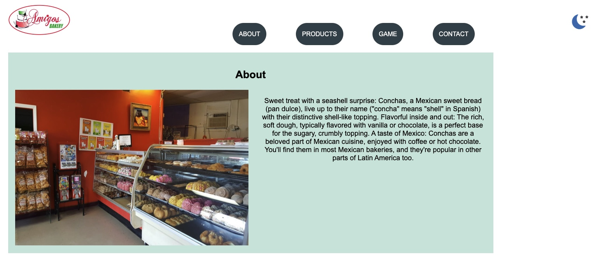
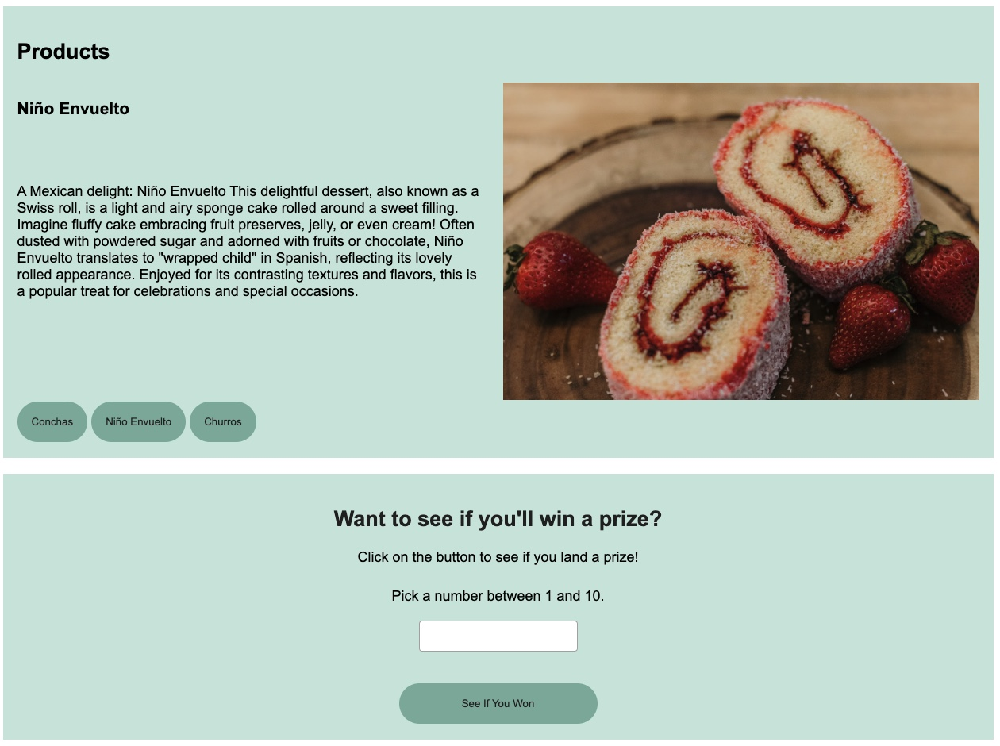
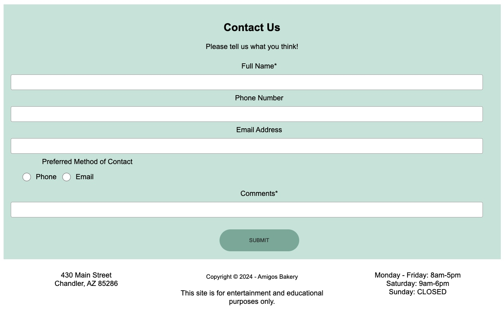
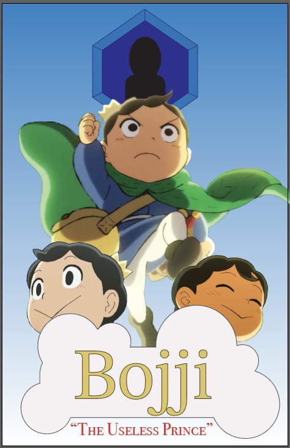
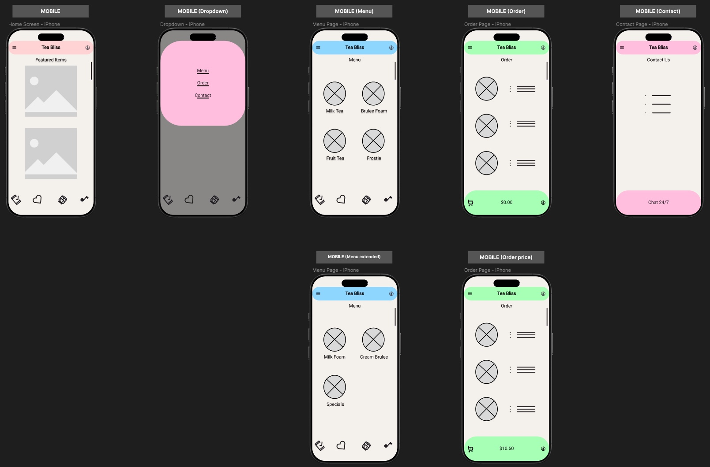
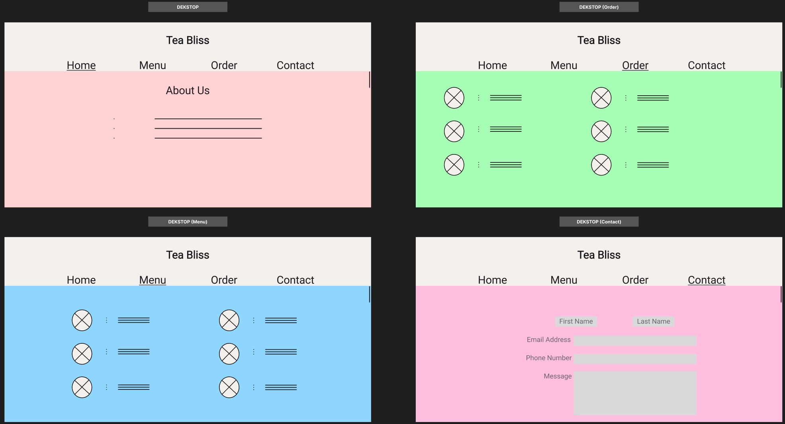

Mom & Pop Bakery Topple Big Manufacturers
Background
Amigos Bakery is a local business centered around selling everything
Mexican bakery.
Problem
There was no existing online presence for this bakery so
establishing a website was needed. Being new to the area the owners
just wanted a site to give information; ordering was not a part of
the initial website.
Process
I researched other bakery sites to get a sense for the industry
standard layout along with brainstorming possible improvements.
Understanding my clients wanted two distinct viewing modes, for
accessibility reasons, finding contrasting color combinations was a
must.
Results
Clients saw an increase in customer traffic along with featured
items being requested daily
Image 1: Most popular items section

Image 2: Prize wheel interaction

Image 3: Contact form

Ranking of Kings: Bojji
Background
Bojji is the main character from the anime Ranking of Kings.
Problem
Lack of fanart for the main character.
Process
Rewatched the most significant episodes where Bojji made iconic
actions. Him not saying much means his emotions need to be front and
center. These still shots represent a change in his intentions
invigorating the viewer.
Results
Surge of fanart has propelled more first time viewers increasing the
ratings totals.
Image: Bojji's key moment

Boba VS Summer Heat
Background
Tea Bliss is a local boba shop offering refreshments along with
snack items.
Problem
Being such a new store, there is no current online presence. This
directly hurts the businesses bottom line because most refreshment
stores offer online ordering increasing brand recognition.
Process
I researched my favorite boba websites both mobile and desktop
versions. Implemented a fellow classmate's accessibility idea
through organization by color. Took the already in place categories
to build out the menu tab.
Results
Clients experienced a boom in online orders minimizing their down
times along with improving profits.
Image 1: Mobile views

Image 2: Desktop views
